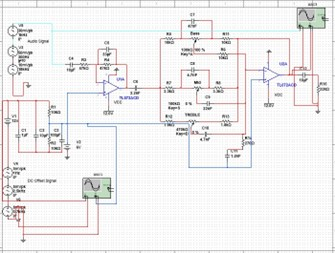

Academic electronics project focused on designing, simulating, and building an active-filter audio equalizer for bass, midrange, and treble control.
I simulated a three-band audio equalizer in Multisim using op-amp-based active filters. The purpose of the circuit was to allow control over bass, midrange, and treble frequency bands.
This project connected circuit theory, frequency response, filtering, and practical audio electronics. The equalizer was designed so each band could shape a different part of the audio spectrum.
I created the equalizer circuit in Multisim and verified the individual filter stages using AC sweep analysis. This allowed me to check the expected frequency response for the bass, midrange, and treble bands before building the circuit physically.
After simulation, I built the circuit on a breadboard using op-amp-based active filters and potentiometers for user adjustment. The breadboard implementation allowed me to test the circuit with real audio signals and evaluate how each band affected the sound.

Multisim Design: Active-filter equalizer schematic used to simulate and verify frequency response before hardware testing.
The equalizer was built and evaluated on a breadboard using op-amp-based active filters for bass, midrange, and treble control. The circuit achieved clear tonal separation across the frequency bands.
The final performance was confirmed through listening tests using different genres of music. Adjusting the controls produced noticeable changes in the low, middle, and high frequency ranges, demonstrating that the equalizer successfully shaped the audio signal.
This project strengthened my understanding of active filters, op-amp circuits, frequency-domain analysis, and practical analog circuit construction. It also showed the importance of comparing simulation results with real hardware behavior when building audio electronics.